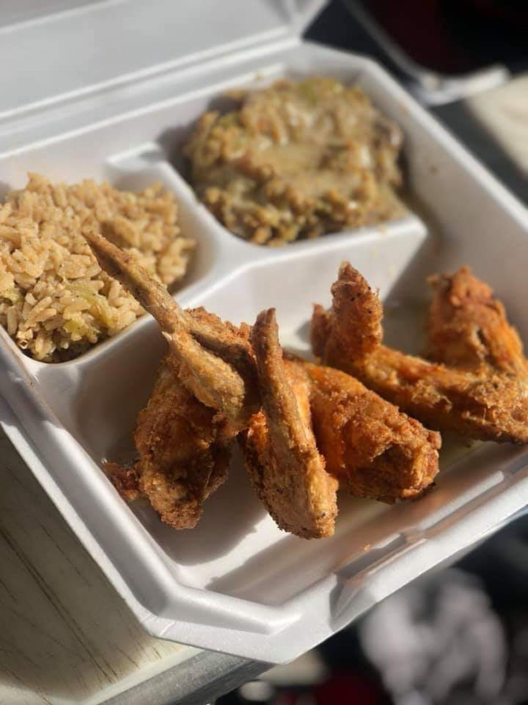

Skip to content
Soul food on Joe Louis Dr
Plan an event · (210) 420-9645
Honey's Kitchen
Menu
Home
Menu
Photos
Reviews
Our story
Visit
Honey's Kitchen · San Antonio
Photos
Real work, straight from Honey's Kitchen.
All
Plates
Guests
Meatloaf-style slice with sweet potatoes
Fried fish plate with greens and yams
Regulars around a table
Guests at a Honey's event

Fried wings with rice and sides
Pork chops and mashed potatoes
Gravy plate with green beans
Fried chicken and sweet potatoes
The dining room
Call (210) 420-9645